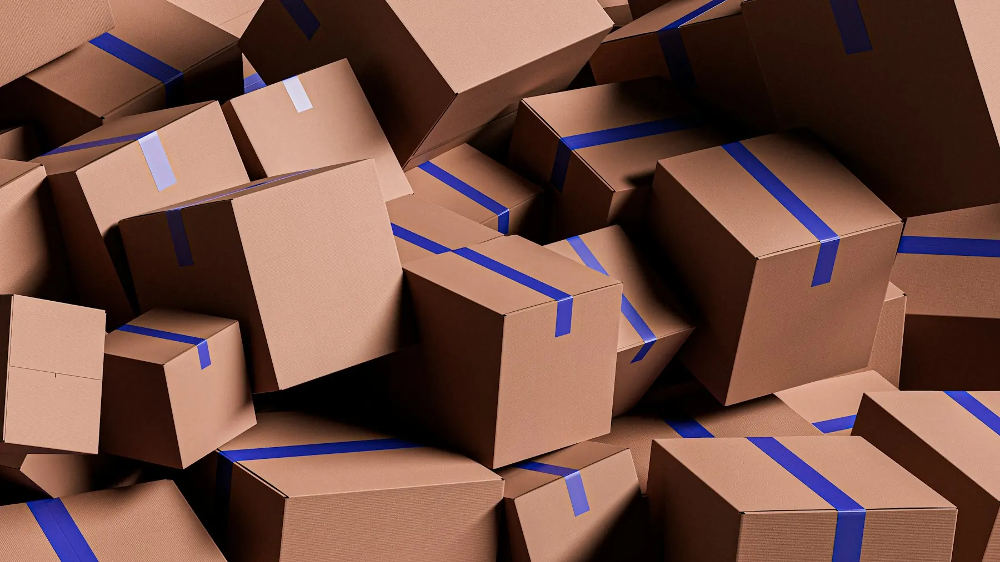

Versandservice: Ihre Sendungen fertig für den Versand
- 2011
- Inhabergeführt seit
- 35+
- Kurierfahrzeuge
- 25+
- Länder in Europa
- Mo bis Sa
- telefonisch erreichbar
Versand vorbereiten, Fehler vermeiden
Eine Sendung braucht mehr als einen Karton. Sie muss erfasst sein, das richtige Label tragen und die passenden Papiere dabeihaben. Fehlt eine Angabe, bleibt die Sendung beim Zoll oder beim Empfänger hängen. Diese Arbeit übernehmen wir für Sie.
Sie übergeben uns Ihre Pakete fertig verpackt, mit Lieferschein und Rechnung. Geht eine Sendung in ein Land außerhalb der EU, liegen die Zollpapiere bei. Wir erfassen jede Sendung, prüfen die Papiere auf Vollständigkeit und bekleben das Paket mit dem passenden Label. Für Kunden aus der Chemie prüfen wir zusätzlich die Gefahrgut-Sendungen. Danach holt ein Lkw die fertigen Sendungen bei uns ab.
Den Versandservice verbinden Sie mit unseren Fahrten: Direktfahrten, Eilfahrten, Fahrten ins europäische Ausland und Gefahrguttransporte.
Das übernehmen wir im Versand.

Sendungen erfassen
Jedes Paket, das Sie uns übergeben, erfassen wir vollständig.
Papiere prüfen
Lieferschein und Rechnung prüfen wir auf Vollständigkeit, bevor die Sendung weitergeht.
Zollpapiere außerhalb der EU
Geht eine Sendung in ein Land außerhalb der EU, prüfen wir, ob die Zollpapiere vollständig beiliegen.
Label bekleben
Jede Sendung bekommt das passende Label, gut sichtbar und lesbar.
Gefahrgut checken
Für Kunden aus der Chemie prüfen wir Gefahrgut-Sendungen auf Kennzeichnung und Begleitpapiere.
Warum Versandservice mit Kumaru.
Ihre Sendungen gehen vollständig und richtig gekennzeichnet auf den Weg, Ihr Team hat Zeit für das eigene Geschäft.
Weniger Rückläufer
Vollständige Angaben und lesbare Labels senken das Risiko, dass Sendungen zurückkommen.
Zoll ohne Stillstand
Vollständige Zollpapiere halten Sendungen in Länder außerhalb der EU in Bewegung.
Gefahrgut im Blick
Gefahrgut-Sendungen aus der Chemie prüfen wir vor der Abholung. Unsere Fahrer besitzen die ADR-Bescheinigung.
Entlastung für Ihr Team
Erfassen, Bekleben und Prüfen kosten Zeit. Diese Arbeit übernehmen wir.
Persönlicher Kontakt
Sie sprechen direkt mit den Menschen, die Ihren Versand vorbereiten.
Konzernunabhängig
Kein Konzern gibt uns Abläufe vor. Wir richten uns nach Ihrem Bedarf.
So läuft Ihr Auftrag.
Bedarf schildern
Nennen Sie uns Menge und Art Ihrer Sendungen und die Ziele.
Angebot erhalten
Wir melden uns mit einem Angebot, das zu Ihrem Versand passt.
Pakete übergeben
Sie übergeben die verpackten Pakete mit den Papieren. Wir erfassen, prüfen und bekleben jede Sendung, danach holt ein Lkw sie ab.
Häufige Fragen zu Versandservice.
Lagern Sie Ware ein?
Nein. Sie übergeben uns Ihre Pakete fertig verpackt. Wir erfassen jede Sendung, prüfen die Papiere auf Vollständigkeit und bekleben sie mit dem passenden Label.
Welche Papiere brauchen Sie?
Zu jeder Sendung Lieferschein und Rechnung. Bei Sendungen in Länder außerhalb der EU zusätzlich die Zollpapiere. Wir prüfen, ob alles vollständig ist.
Muss ich die Pakete selbst verpacken?
Ja. Sie übergeben uns die Pakete fertig verpackt. Wir übernehmen Erfassung, Prüfung der Papiere und Label.
Wie geht es nach dem Bekleben weiter?
Ein Lkw holt die fertigen Sendungen bei uns ab und nimmt sie mit.
Prüfen Sie auch Gefahrgut?
Ja. Für Kunden aus der Chemie prüfen wir Gefahrgut-Sendungen auf Kennzeichnung und Begleitpapiere, bevor der Lkw sie abholt.
Wie fordere ich ein Angebot an?
Nutzen Sie die Angebotsanfrage oder rufen Sie uns an. Das unverbindliche Angebot erhalten Sie schnellstmöglich.


Versandservice anfragen.
Nennen Sie uns Menge und Art Ihrer Sendungen. Wir melden uns mit einem unverbindlichen Angebot.